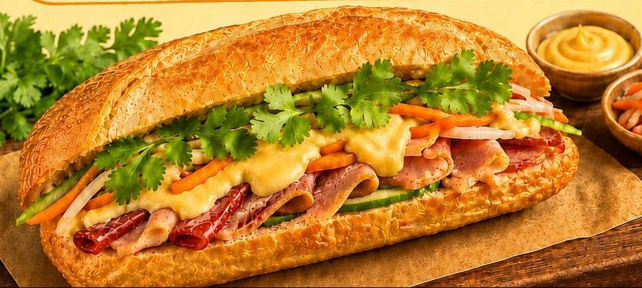

I've tried the beef pho and chicken pho, both are good but the beef is my favourite. Soup is incredibly tasty, noodles are springy and the meat is tender.
A taste of Vietnam
Fresh flavours.
A little comfort.
Find your favourite bowl.
Signature favourites
Food at the heart of everything
Quality ingredients, generous portions and honest value. From a quick bánh mì and coffee to a comforting bowl of phở.
Phở
Slow simmered broth, silky noodles and four bowls to choose from: beef, chicken, ribeye and signature prawn.
From $13.90
Bánh Mì
Crispy baguettes, freshly made. Ten fillings from egg omelet to Iberico char siew and our signature five ham bánh mì.
From $5.90Fresh Spring Rolls
Light, fresh and full of flavour, with your choice of five house sauces.
From $5.80Vietnamese Coffee
Traditional phin brews plus coconut, salted and our signature spiced coffee.
From $3.80
Our story
Vietnamese at heart, made for Singapore
Spring Roll Station was created with a simple idea: to make well loved Vietnamese food easy and enjoyable for everyone in Singapore, with a strong focus on quality ingredients, generous portions and honest value.
What started at our original Upper Cross Street outlet has grown with the support of our regulars. Today you will find us at Novena Regency and at Skysuites at Anson in Tanjong Pagar.
Quality ingredientsGenerous portionsNo GSTNo service chargeWarm and casual
Read our story
Customer reviews
What our customers say
Genuine Google reviews from the people who eat with us, in their own words.
4.7
40 Google reviews, Novena
I think these are the best shrimp and pork spring rolls I've ever eaten in Singapore. The filling is fresh, delicious, and generous. The flavor is very authentically Vietnamese. I will definitely buy them again.
The chicken and pork pho here is very flavourful without being salty. The portion size is very satisfying for the price. Dare I say it might be one of the best noodles I've had around in Singapore.
The pork banh mi was delicious! Very soft yet crispy texture to the baguette and the fillings were very generous! I could not hold myself back from finishing half before taking a picture. Value for money!
AMAZING FOOD!!!! Never had such good pho before. Ordered the pork pho and omg the pork is sooooo tender and they are so generous!!
I've tried the beef pho and chicken pho, both are good but the beef is my favourite. Soup is incredibly tasty, noodles are springy and the meat is tender.
I think these are the best shrimp and pork spring rolls I've ever eaten in Singapore. The filling is fresh, delicious, and generous. The flavor is very authentically Vietnamese. I will definitely buy them again.
The chicken and pork pho here is very flavourful without being salty. The portion size is very satisfying for the price. Dare I say it might be one of the best noodles I've had around in Singapore.
The pork banh mi was delicious! Very soft yet crispy texture to the baguette and the fillings were very generous! I could not hold myself back from finishing half before taking a picture. Value for money!
AMAZING FOOD!!!! Never had such good pho before. Ordered the pork pho and omg the pork is sooooo tender and they are so generous!!
I found this place randomly on Google Maps when I looked up banh mi and it is safe to say that this place has the best banh mi. I've had my fair share of banh mi in the states but this one was off the charts.
The Bun Cha is one of the best I've tried in Singapore. The meat is well grilled and the portion is rather substantial. I'll be back to try their banh mi.
Food was fantastic! Made to order, very fresh and tasty. And the service was great, very friendly and helpful.
Delicious bowl of chicken pho!
I've tried the beef pho and chicken pho, both are good but the beef is my favourite. Soup is incredibly tasty, noodles are springy and the meat is tender.
I think these are the best shrimp and pork spring rolls I've ever eaten in Singapore. The filling is fresh, delicious, and generous. The flavor is very authentically Vietnamese. I will definitely buy them again.
I found this place randomly on Google Maps when I looked up banh mi and it is safe to say that this place has the best banh mi. I've had my fair share of banh mi in the states but this one was off the charts.
The Bun Cha is one of the best I've tried in Singapore. The meat is well grilled and the portion is rather substantial. I'll be back to try their banh mi.
Food was fantastic! Made to order, very fresh and tasty. And the service was great, very friendly and helpful.
Delicious bowl of chicken pho!
I've tried the beef pho and chicken pho, both are good but the beef is my favourite. Soup is incredibly tasty, noodles are springy and the meat is tender.
I think these are the best shrimp and pork spring rolls I've ever eaten in Singapore. The filling is fresh, delicious, and generous. The flavor is very authentically Vietnamese. I will definitely buy them again.
Two outlets
Find us at Novena or Tanjong Pagar
Same recipes, same generous portions. Dine in, take away or order ahead on WhatsApp for collection.
Spring Roll Station (Novena)
275 Thomson Road #01-26Novena Regency, Singapore 307645
Open daily, 10:00am to 12:00 midnight
Spring Roll Station (Skysuites at Anson)
8 Enggor Street #01-01/02Skysuites at Anson, Singapore 079718
Open daily, 10:00am to 10:00pm
Hungry yet?